21 June P2 + historical ECAA
Multi-step flashcards for the P2 lesson and historical ECAA predecessor practice. Each card is one PNG with the question header visible and per-step gray work boxes designed as Anki Image Occlusion masks.
11 cardsP2 + historical ECAA predecessorMulti-step
Scope boundary
ECAA is historical predecessor practice, not current ESAT. Q8 is DEFERRED / official-reference-only. Q9 was NOT DISCUSSED / official-reference-only. No current ESAT booklet claim is made.
ECAA specimen Q15 - rigid transformations
Historical UCLES ECAA 2020 specimen, Section 1 Part A Q15 - historical ESAT-predecessor practice, NOT a current ESAT question. Lesson evidence: live repair. Official answer B (reflection in the y-axis).
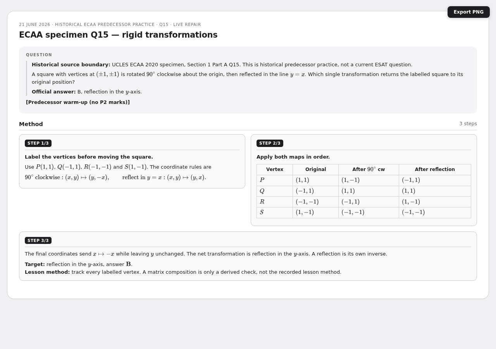
ECAA specimen Q16 - conditional probability
Historical UCLES ECAA 2020 specimen, Section 1 Part A Q16 - historical ESAT-predecessor practice, NOT a current ESAT question. Lesson evidence: live repair. Official answer E (2/3).
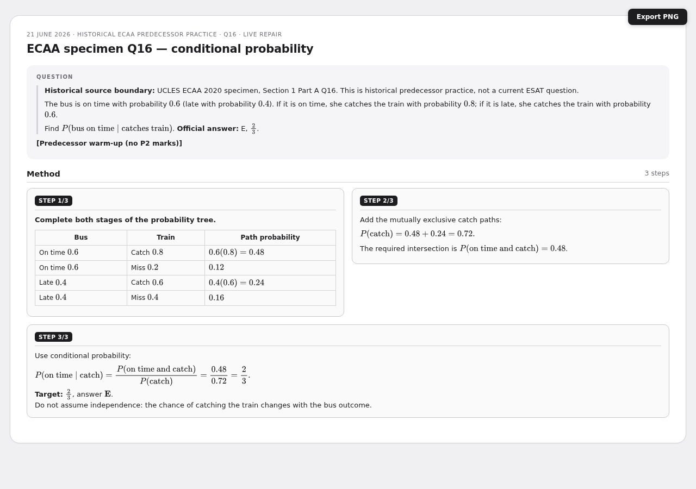
P2 Q1 - arithmetic series
Pearson WMA12/01 Q1 (P2-QP Q1; P2-MS Q1); series formulas supplied on formula-booklet p.3. Lesson evidence: original correct, no correction needed.
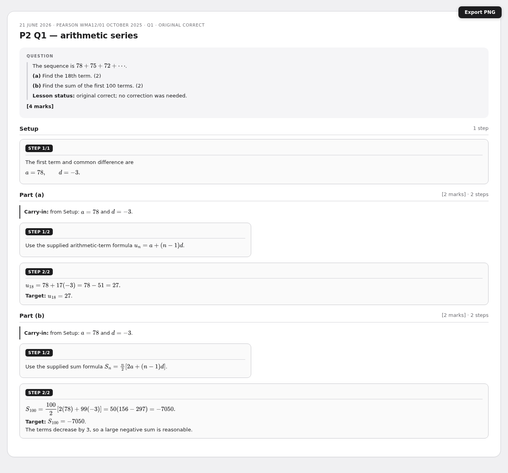
P2 Q2 - binomial expansion
Pearson WMA12/01 Q2 (P2-QP Q2; P2-MS Q2); binomial theorem supplied on formula-booklet p.3. Lesson evidence: live repair - submitted state scored 0/6 (expansion abandoned).
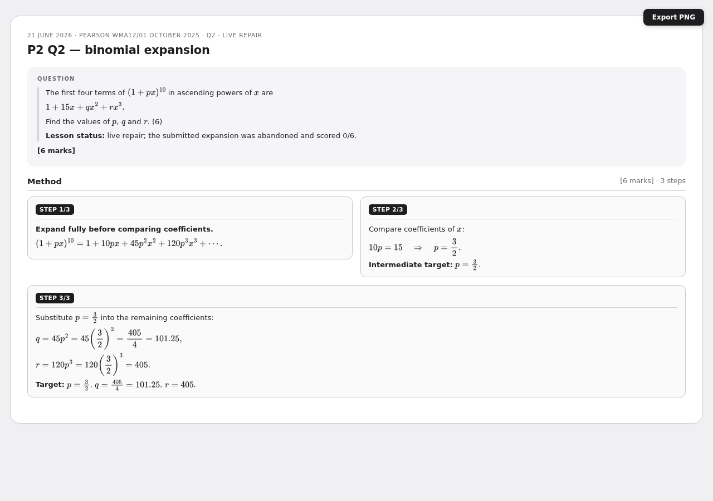
P2 Q3 - logs and the trapezium rule
Pearson WMA12/01 Q3 (P2-QP Q3; P2-MS Q3); change-of-base and trapezium supplied on formula-booklet p.3. Lesson evidence: (a) original correct; (b)(i)(ii) partial - a 6-value/5-strip counting slip cost three marks.
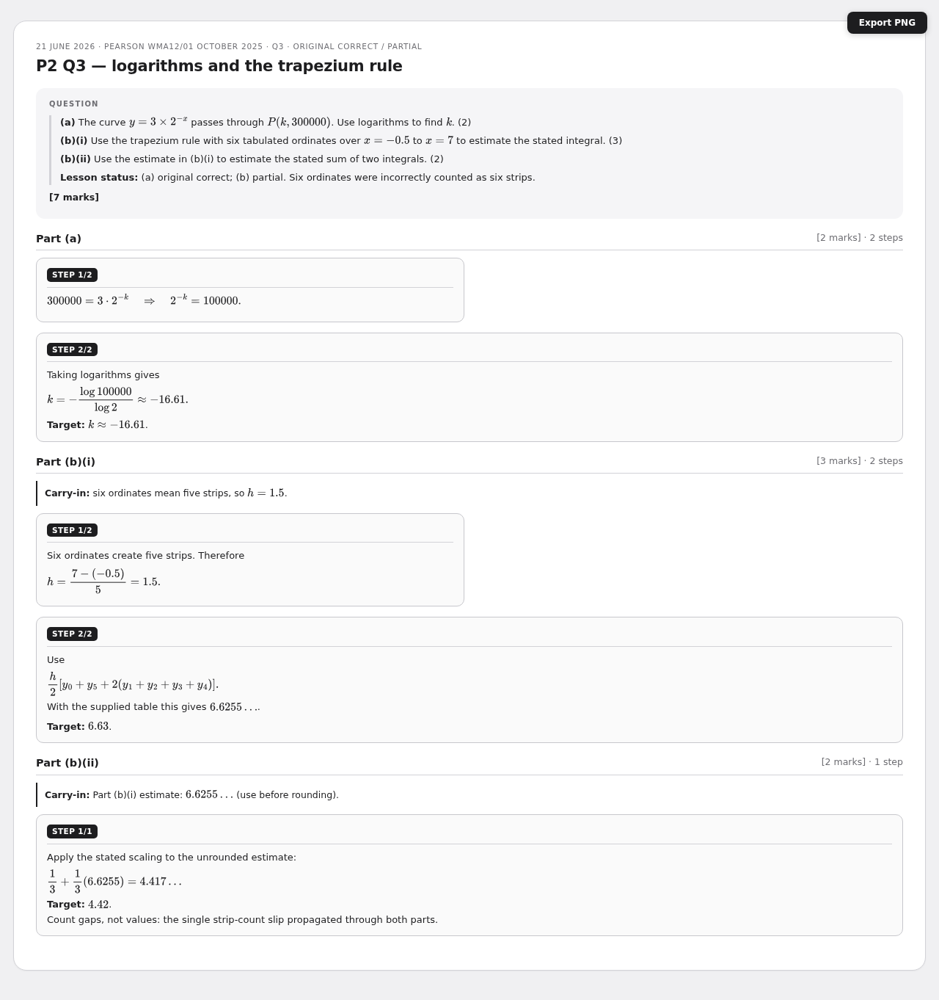
P2 Q4 - division, factor/remainder, proof, decreasing interval
Pearson WMA12/01 Q4 (P2-QP Q4; P2-MS Q4); factor/remainder and discriminant memorised. Lesson evidence: (a)(b)(i) partial; (b)(ii) live repair.
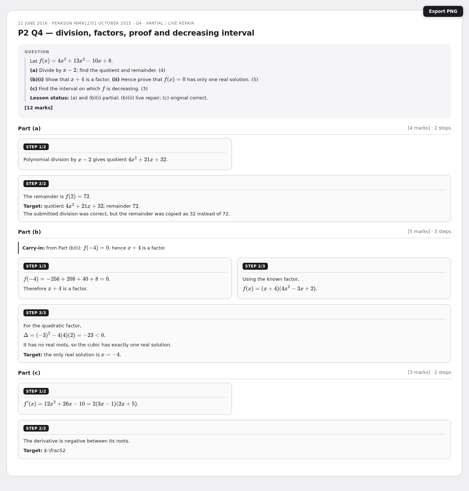
P2 Q5 - trigonometric equations (degrees, then radians)
Pearson WMA12/01 Q5 (P2-QP Q5; P2-MS Q5); trig identities memorised. Lesson evidence: partial / live repair. Domain conditions are explicit in the guide and the mark scheme.
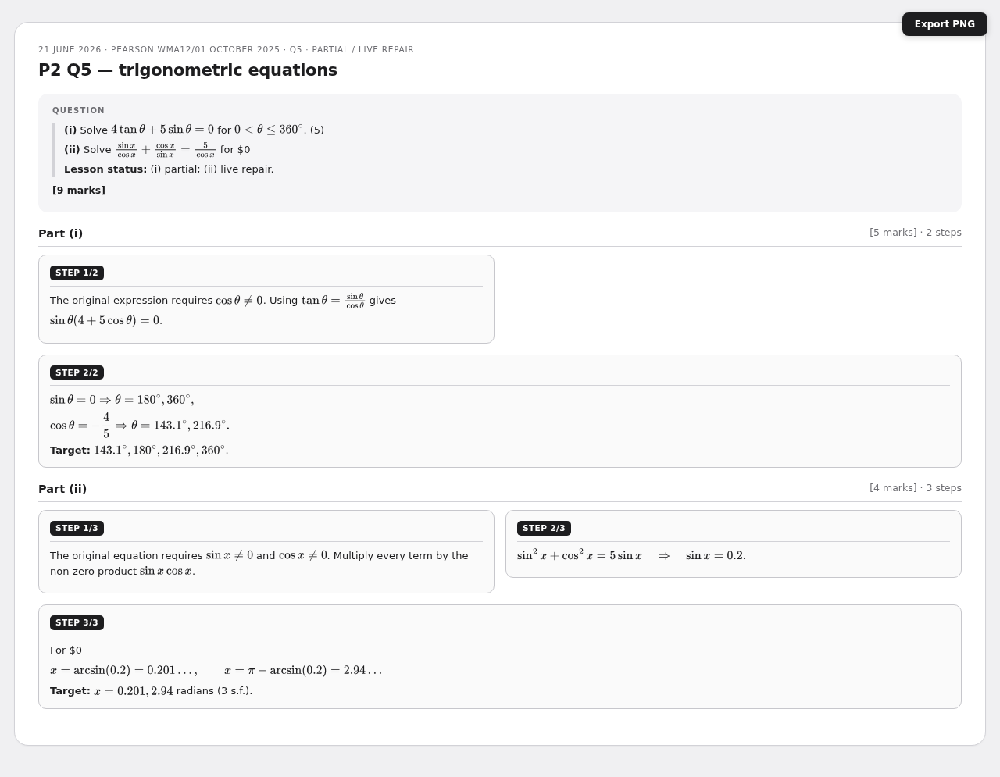
P2 Q6 - circles
Pearson WMA12/01 Q6 (P2-QP Q6; P2-MS Q6); circle equation memorised. Lesson evidence: (a) original correct; (b) live repair. The plural 'possible equations' signals two circles.
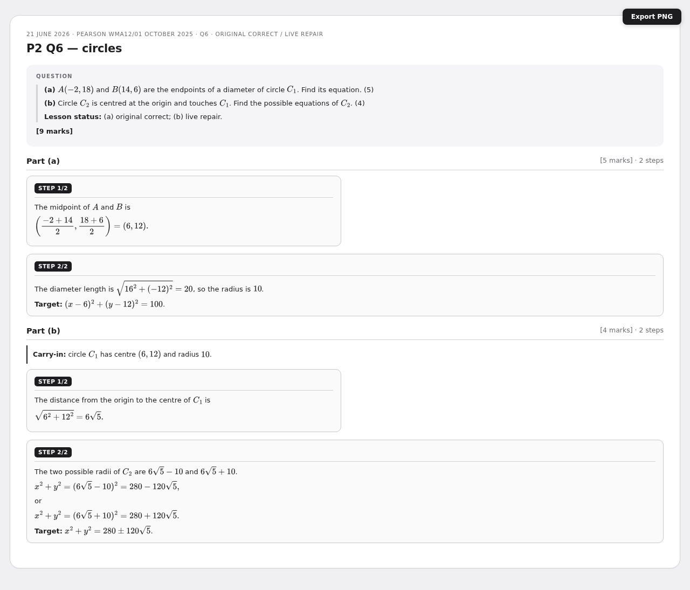
P2 Q7 - differentiation and area
Pearson WMA12/01 Q7 (P2-QP Q7; P2-MS Q7); power-rule differentiation memorised. Lesson evidence: (a)(b) original correct; (c) partial - a sign slip gave a negative area.
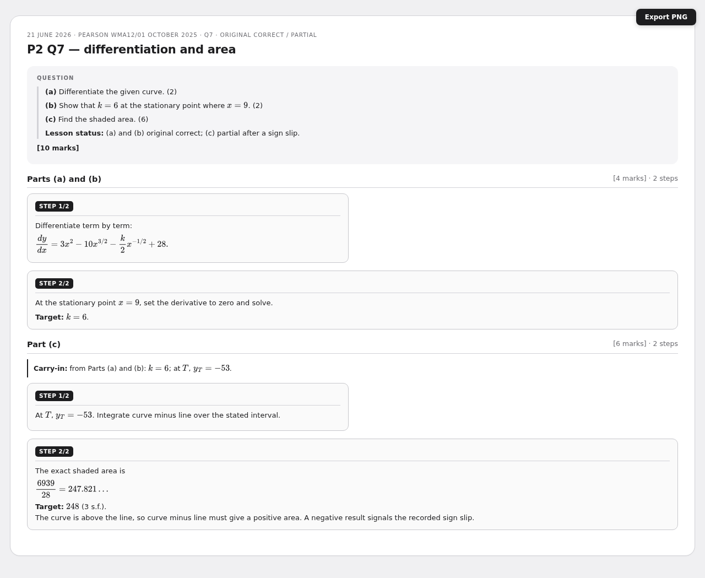
P2 Q8 — deferred / official-reference-only
Q8: DEFERRED / official-reference-only. Not worked in the lesson.
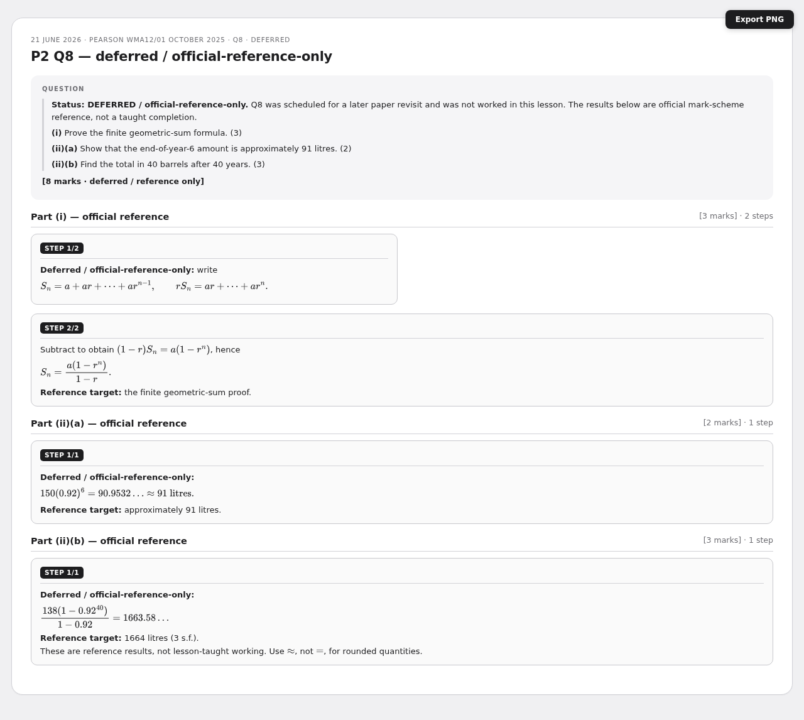
P2 Q9 — not discussed / official-reference-only
Q9: NOT DISCUSSED / official-reference-only; part (ii)(b) detail deferred.
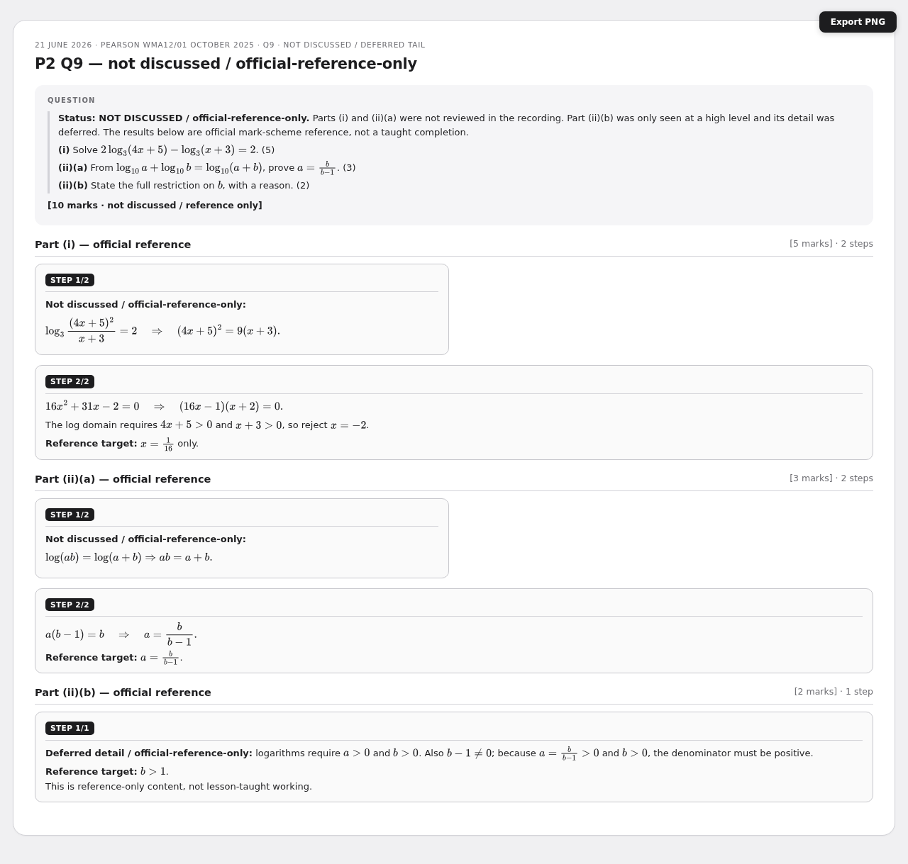